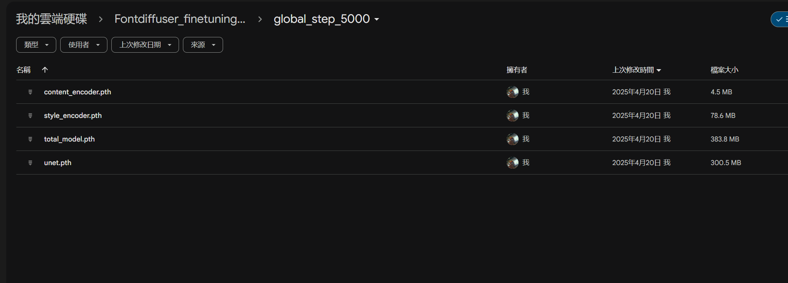

00
01
02
03
04
05
06
07
作業 02-機器生成
這次作業的流程沒有作業一那麼長，但是要花的時間比作業二久一點，但大部分時間是在訓練手寫字體的部分，所以比上一個作業輕鬆，上一個作業要手寫上千個文字非常的累人，但每天寫一點的話不算太累，作業二的strong base line要花一點時間去找到思源黑體的全文字。
big5字體包位置連結：授權至SIL開源字型
(p.s 請記得修改網址)
總分
完成後打勾
配分
分項描述
4
Simple baseline - 完成訓練並截圖上傳證明
4
Medium baseline - 推論出big5全文字並展示
2
Strong baseline - 推論出思源黑體(中文)全文字並展示
-10
沒有寫100字心得
權重檔fontdiffuser版本截圖

展示big5全文字
§¨¯°±·×÷øŋœɐɔɛɪɵʃʊˆˇˉˊˋˍ˙ЁАБВГДЕЖЗИЙКЛМНОПРСТУФХЦЧШЩЪЫЬЭЮЯабвгдежзийклмнопрстуфхцчшщъыьэюяё–—‘’“”‥…‧′‵※€℃℅℉№℡ⅠⅡⅢⅣⅤⅥⅦⅧⅨⅩⅰⅱⅲⅳⅴⅵⅶⅷⅸⅹ←↑→↓↖↗↘↙↸↹⇧≒␀␁␂␃␄␅␆␇␈␉␊␋␌␍␎␏␐␑␒␓␔␕␖␗␘␙␚␛␜␝␞␟␡①②③④⑤⑥⑦⑧⑨⑩⑴⑵⑶⑷⑸⑹⑺⑻⑼⑽─│┌┐└┘├┤┬┴┼═║╒╓╔╕╖╗╘╙╚╛╜╝╞╟╠╡╢╣╤╥╦╧╨╩╪╫╬╭╮╯╰╱╲╳╴▁▂▃▄▅▆▇█▉▊▋▌▍▎▏▔▕■□▲△▼▽◆◇○◎●◢◣◤◥★☆♀♂✽⺀⺄⺆⺇⺈⺊⺌⺍⺕⺜⺝⺥⺧⺪⺬⺮⺶⺼⺾⻆⻊⻌⻍⻏⻖⻗⻞⻣ 〡〢〣〤〥〦〧〨〩㇏㈱㊣㎎㎏㎜㎝㎞㎡㏄㏎㏑㏒㏕䒑万丌与丏丮丰丱丳丶丼丿乇乚乜乿亃亄亅亍亓亠亢亳亶亹仂仈仉仚仜仝仡仨仩仱仴仵价伀伂伄伅伈伋伎伒伓伔优伝伢伬伭伳伻伾伿佁佈佉佌佒体佖佘佚佟佡佢佤佧佪佫佮佴佶佷佸佹佺佼佽侀侁侂侄侅侇侉侐侑侒侔侕侗侘侚侜侞侲侳侷侹侺侻俀俁俅俇俉俋俍俓俔俖俙俛俜俬俴俵俷倅倇倎倓倕倗倛倜倞倠倢倧倬倯倰倱倳倵倷偀偁偅偆偈偊偋偍偑偓偗偛偝偞偟偠偡偢偣偤偨偩偪偫偭偮偯偰偲偳傂傃傇傋傌傎傒傔傕傚傛傜傝傞傣傮傰傱傴傶傸傺傽傿僁僂僄僆僇僈僉僊僋僎僓僔僗僛僝僠僣僤僦僨僩僪僬僯僰僳僶僸僽僾僿儃儅儆儇儊儋儌儑儓儕儗儚儜儠儢儤儥儦儩儭儮儰儱儳儴儵儸儹儺儻儽儿兙党兛兝兞兟兡兣冂冇冈冏冓冔冖冘冞冪冫冱冹冼冾凄凅凈凎凐凔凗凘凞凵刂刉刌刐刓刖刜刞刡刱刲刳刵剄剆剉剒剕剚剞剟剡剢剫剬剭剮剸剺剻剼劀劁劂劄劊劋劌劓劖劗劘劙劦劮劻劼勀勂勍勓勖勣勩勫勯勰勱勴勷勹勺勼匉匊匋匎匑匒匚匜匟匢匭匰匴匷匸匼匽卄卌卍卣卩卬卲卼厂厊厎厏厒厔厖厗厘厙厜厞厤厧厬厴厶厹叡叻吇吘吙吜吤吥吨吪听吰吷吽呁呅呇呏呔呠呡呣呤呥呦呧呫呬呯呰呲呴呺呾呿咁咂咇咈咍咑咘咠咡咢咥咧咩咭咮咰咶咷咺咼咾咿哃哅哆哏哖哞哠哢哤哧哫哱哳哷哸哻哽哿唃唄唅唇唈唊唋唌唎唏唑唒唗唚唦唪唭唰唲唴唵唶唹唻唼啀啁啅啈啋啍啎啐啑啒啗啢啥啵啶啷啽啿喁喈喌喍喎喏喑喒喓喕喙喡喢喣喤喥喦喨喫喭喵喿嗀嗂嗃嗄嗈嗉嗊嗋嗌嗍嗏嗐嗒嗔嗕嗖嗙嗛嗝嗢嗧嗩嗲嗶嗹嗺嗼嗿嘁嘂嘄嘌嘏嘐嘒嘓嘕嘜嘝嘧嘪嘬嘳嘵嘸嘺嘽嘾噀噁噂噅噆噈噉噊噌噘噚噞噠噣噦噭噮噰噲噳噶噷噾噿嚁嚂嚃嚄嚆嚌嚍嚓嚗嚘嚙嚚嚜嚝嚦嚧嚪嚫嚬嚭嚲嚳嚵嚽嚾囃囅囆囋囍囓囔囗囝囟囡囥囧囫囮囷囹囿圁圂圄圇圉圊圌圔圚圛圜圞圠圢圣圩圪圮圴圻坁坅坉坋坌坒坢坨坫坭坯坰坱坲坳坴坵坶坻坽垀垌垏垓垔垕垗垘垙垚垛垝垞垟垤垥垵垶垸垹垺垼垽垿埁埆埇埌埏埐埒埕埜埡埢埣埥埧埩埬埭埮埰埱埲埳埴埵埶埸埻埼埽堀堁堄堇堈堉堋堌堍堎堐堔堙堛堜堝堞堠堣堥堧堨堩堬堭堮堲堳堶堷堸堹堻堽堿塈塉塋塍塎塏塒塓塕塙塛塝塣塤塥塨塯塱塴塶塺塻塼塽塿墁墂墆墇墈墉墋墎墏墐墑墔墘墝墠墡墣墥墦墩墫墬墯墱墺墻墼墽墿壂壆壈壉壎壏壒壔壖壚壛壝壣壧壨壴壼壾壿夃夆夊夌复夎夒夗夬夯夼奀奅奊奓奜奡奫奭奰奱奲奷奻奼奾奿妀妅妎妏妐妗妘妠妡妢妦妧妱妲妴妵妶妺妼妽姀姁姃姅姇姈姌姎姏姖姛姝姞姠姡姤姩姭姮姱姲姳姴姵姶姷姺姼姽姾娀娉娊娏娕娖娗娙娞娭娮娳娵娷娸娹娾婂婃婄婇婈婌婍婐婑婒婓婕婖婗婘婛婜婝婞婟婠婤婥婧婩婬婭婰婸婺婻婼婽媃媄媊媋媌媎媏媐媓媔媕媗媜媝媞媟媢媥媦媧媩媬媮媯媰媱媴媵媶媷媸媹媺媻媿嫀嫄嫆嫇嫈嫊嫋嫍嫕嫙嫚嫛嫜嫝嫞嫟嫠嫢嫥嫨嫪嫫嫬嫭嫮嫳嫴嫶嫷嫸嫹嫺嫽嫿嬁嬂嬃嬅嬇嬈嬏嬐嬓嬔嬖嬗嬙嬚嬛嬞嬠嬡嬣嬥嬦嬧嬨嬬嬭嬮嬯嬲嬼嬽嬾嬿孃孅孇孈孋孌孍孎孖孛孢孥孬孮孲孷孻宀宁宄宎宒宓宕宧宨宬宭寀寁寊寋寍寎寑寖寘寙寠寣寪寯寰寱寲尃尌尐尒尕尟尢尥尨尪尰尳尻屄屇屌屔屖屘屙屝屣屧屨屩屪屭屮屳屴屺屻屼屾岆岈岉岊岋岍岏岒岓岕岝岟岠岢岣岤岥岦岧岨岪岬岭岮岯岰岵岶峆峇峈峉峊峋峌峎峏峐峒峓峔峖峗峘峚峛峞峟峬峮峱峴峷峸峹峿崀崋崌崍崏崒崚崝崞崟崠崣崤崥崦崧崨崮崰崱崲崳崴崵崶崷崸崹崺崼崽崿嵀嵁嵂嵃嵅嵉嵊嵋嵎嵑嵒嵕嵙嵞嵢嵣嵥嵧嵨嵫嵬嵯嵱嵲嵷嵹嵺嵼嵽嵾嵿嶀嶁嶂嶆嶈嶉嶊嶍嶒嶓嶔嶕嶗嶙嶚嶜嶞嶟嶠嶡嶢嶧嶨嶩嶪嶬嶭嶮嶯嶰嶱嶲嶴嶵嶷嶸巀巂巃巆巇巉巋巏巑巕巘巛巟巠巰巹巿帄帊帎帔帗帙帟帠帡帢帣帤帨帩帴帾幁幃幄幊幋幍幎幏幓幘幙幜幝幠幡幦幧幨幩幪幬幭幮幯幰幵广庀庂庄庈庉庋庌庍庛庢庣庤庥庨庪庬庮庰庱庲庳庴庹廄廅廆廇廋廌廎廑廒廔廕廗廘廙廛廜廞廡廥廦廧廨廩廮廯廱廲廴廾异弅弇弋弚弝弢弣弤弨弮弰弳弶弸彀彃彄彉彊彋彏彐彔彖彘彡彧彯彳彴彶彸彽彾徂徆徉徖徛徜徟徠徥徦徫徭徯徲徶徻徼徾徿忀忁忉忏忐忑忒忔忕忞忡忣忤忥忨忪忭忮忯忳忴忷忸忺忻怀怉怊怋怌怍怐怑怓怗怙怚怛怜怞怢怤怦怩怫怬怭怮怲怳怴怷怹恀恁恂恄恅恇恉恌恒恓恔恘恚恛恝恞恟恦恧恮恲悀悁悃悆悇悈悊悎悐悒悕悗悛悜悝悢悰悱悷悹悺悾悿惀惁惃惄惇惈惉惊惌惍惎惏惓惔惙惛惝惢惤惲惵惷惸惼惾惿愃愄愅愆愊愋愍愐愒愓愔愖愘愝愨愩愫愬愮愯愲愶愻慀慁慅慆慉慊慏慒慓慔慖慛慞慡慥慦慪慬慱慲慳慴慵慹慺憀憃憉憋憌憍憒憓憖憛憝憟憡憢憨憪憭憮憯憰憱憳憴憵憸憺憼憿懁懃懅懆懋懌懖懘懞懟懠懤懥懧懨懩懪懫懭懮懰懱懹懻懽戁戃戄戇戉戔戙戠戣戤戥戧戩戫戭戺戽扂扃扆扊扐扑扙扚扜扞扠扡扢扤扥扦扰扱扲扴扷扺扻扽抁抃抆抇抈抌抎抏抔抩抪抭抮抯抰抳抴抶抸抻抾拊拏拑拫拰拲拵拶拸拹拺拻挀挂挃挋挌挍挎挏挐挓挔挕挩挬挭挲挳挴挶挸挹挻挼捀捁捃捄捅捇捈捊捋捌捍捑捔捖捗捘捙捚捥捭据捯捰捵捸捺捼捽掁掂掅掇掊掍掎掐掑掔掗掜掝掞掟掤掫掭掮掯掰掱掽掾揂揃揄揅揇揈揊揋揌揎揓揕揗揘揙揜揝揟揠揤揥揧揨揫揯揰揱揲揳揵揶揹搆搉搊搋搌搎搐搒搕搘搚搛搟搠搡搢搣搤搥搦搧搨搫搮搯搰搳搴搵搷搹搿摀摁摃摋摍摎摐摓摙摛摜摝摞摠摡摥摦摨摫摬摭摮摰摲摳摴摵摶摷摻摽摿撂撅撉撊撋撌撏撖撗撘撙撜撝撟撠撢撣撦撱撳撽撾擃擉擏擐擖擗擙擛擢擣擤擨擩擫擭擯擳擷擸擼擽擿攁攃攄攇攉攌攍攎攐攓攕攖攗攛攠攡攢攥攦攩攭攮攲攳攴攷攽敁敃敆敉敊敓敔敜敤敥敧敨敪敯敳敶敹敺敻敼敿斀斁斄斌斒斔斕斖斛斝斞斠斢斨斪斮斲斳斶斸斻斿旂旃旄旆旍旐旒旓旚旛旝旞旟无旡旮旯旰旲旳旴旵旻旼旽昄昅昇昈昉昊昋昍昐昑昒昕昜昝昡昢昤昦昫昮昲昳昴昵昶昹昺晁晅晇晊晑晙晛晜晞晟晡晢晥晪晬晱晲晷晸晹晻晼晾暀暆暊暋暌暍暐暔暕暙暝暟暠暡暩暪暯暰暱暲暵暷暸暺暻暽暾曀曄曇曈曊曋曌曏曒曘曚曛曞曣曤曨曩曫曬曭曮曶朁朄朅朊朏朐朒朓朘朠朡朢朣朳朸朹机朻朼朾朿杅杆杇杈杋杌杍杓杕杗杙杚杝杠杪杬杲杴杶杸杹杺杻杼杽极枃构枅枆枌枍枎枑枒枓枔枘枙枟枮枰枲枳枵枷枹枺枻柀柁柂柃柅柆柈柉柊柋柌柍柎柒柘柙柛柜柝柟柢柣柤柦柧柪柫柭柮柲柶柷柸柺柼栒栔栖栘栚栜栝栟栠栥栦栨栫栭栮栯栱栲栳栴栵栺栻桁桄桉桋桍桎桏桫桭桮桯桱桲桴桵桷桸桹桻桼桽桾梀梂梇梉梊梋梌梏梐梑梒梖梛梜梠梡梣梤梩梪梫梬梮梲梴棆棇棈棌棎棐棑棓棔棖棜棝棞棡棤棦棨棩棪棫棬棯棰棱棳棴棶棷棸棻棼棽椄椆椇椈椊椋椌椏椐椑椓椔椕椗椥椪椯椲椳椴椵椷椸椹椻椼椽椿楀楁楂楄楅楈楉楋楌楎楏楑楒楖楗楘楙楛楜楝楟楢楣楥楦楩楪楬楮楯楰楱楴楶楸楺楻榃榍榎榐榑榓榖榗榙榚榞榠榡榣榤榥榦榧榩榪榬榯榰榱榳榵榶榹榼榽榾榿槂槃槄槆槉槊槎槏槔槙槢槤槥槦槧槫槬槭槮槱槲槴槶槷槸槻槼槾槿樀樄樆樇樈樉樍樏樑樔樕樖樗樘樛樝樠樥樦樧樨樲樴樻樼樾樿橀橁橆橈橉橍橎橏橐橑橔橕橖橚橛橝橞橠橤橦橧橨橩橪橭橯橶橾橿檁檃檅檇檉檌檍檎檐檑檒檓檕檖檗檚檛檞檟檠檡檣檤檥檦檨檭檮檯檴檶檷檹檺檽櫅櫆櫇櫋櫌櫍櫏櫐櫑櫙櫜櫞櫟櫠櫡櫧櫨櫪櫫櫬櫮櫯櫰櫱櫳櫸櫹櫺櫼欀欂欃欈欉欋欏欐欑欒欓欗欘欙欚欞欥欨欬欭欯欱欳欴欶欷欸欹欻欼欿歁歂歃歅歆歈歊歋歍歎歑歔歕歖歛歜歞歠歭歶歾殀殂殄殈殌殍殎殏殑殔殕殗殙殛殞殟殠殢殣殥殦殧殪殫殭殰殳殶殽毃毄毇毈毉毊毌毐毖毘毚毞毠毢毣毤毦毧毨毬毰毲毳毷毸毹毻毼毾毿氀氁氂氃氄氅氆氈氉氋氌氍气氕氘氙氚氝氠氡氥氪氬氰氶氻氿汃汆汊汋汌汍汎汏汒汔汛汜污汥汦汧汩汫汭汯汱汳汴汶汸汻沀沂沄沆沇沊沋沍沎沏沓沔沕沘沚沜沝沬沭沰沴沶沷沺泀泂泃泆泇泍泏泐泑泒泔泖泙泚泜泝泞泠泧泩泫泬泭泮泯泲泵泹洀洁洃洄洇洈洉洊洍洎洏洐洑洒洖洘洙洚洝洟洠洢洧洨洩洫洬洭洮洯洰洳洴洵洷洸洹洺洼洿浀浂浘浞浟浠浡浢浣浤浥浧浨浭浯浰浵浶浹浺浻浼浽浾浿涀涂涃涄涅涆涊涋涌涍涐涑涒涔涗涘涪涫涬涳涴涷涺涻涽涾涿淀淂淈淉淊淍淏淐淓淔淕淖淗淛淜淝淟淠淢淣淥淦淩淬淭淯淰淲淴淶淼淽渀渃渜渟渢渧渨渫渮渰渱渳渵渶渹渻渼渽渿湀湁湄湅湆湇湉湋湎湑湒湓湕湚湜湝湞湟湠湡湢湣湤湥湦湨湩湫湱湲湳湴湷湸湹溈溍溎溒溓溔溗溙溛溞溟溠溡溣溤溦溧溮溰溱溲溳溴溷溹溽溾溿滀滁滃滆滈滉滊滍滎滏滐滒滕滖滘滜滫滭滮滱滵滶滷滸滹滻滼滽漀漃漅漇漈漉漊漍漎漒漘漙漚漜漞漟漡漥漦漧漭漮漰漵漶漷漹漺漻漼潀潁潃潎潏潐潒潓潕潗潚潝潞潟潠潡潢潣潧潩潪潫潬潯潲潳潶潷潻潽潾潿澂澅澇澉澋澌澍澐澒澓澔澕澖澞澠澢澣澥澦澨澩澪澫澬澭澮澯澰澲澴澶澸澺澼澽澿濄濆濇濈濉濊濋濌濍濎濏濔濕濜濝濞濢濣濦濧濨濩濭濮濰濲濴濷濻濼濿瀀瀁瀄瀅瀇瀊瀌瀍瀎瀔瀖瀗瀘瀙瀜瀠瀡瀢瀣瀤瀦瀧瀩瀪瀫瀯瀱瀲瀳瀴瀵瀷瀸瀹瀺瀻瀼瀿灀灁灂灃灄灅灆灈灉灊灒灕灖灗灚灛灝灞灟灠灡灢灥灦灨灩灪灱灴灺炂炃炄炅炆炑炓炔炖炘炚炟炡炤炩炰炱炴炵炷炾烅烆烇烋烍烎烑烒烓烔烗烚烜烞烠烡烢烯烰烳烴烶烷烸烺烻烼烿焀焂焄焆焋焌焍焎焐焓焗焛焜焞焟焠焢焣焥焨焮焯焱焲焺煁煂煃煄煆煇煋煍煐煓煔煖煘煚煝煟煠煡煢煣煨煪煰煲煸煻熀熁熂熅熆熇熉熏熐熒熗熚熛熜熝熞熠熡熤熥熧熩熪熯熰熲熳熵熸熼熽熿燀燁燂燅燆燇燊燋燏燔燖燘燚燛燠燡燢燤燨燰燱燲燸燹燼燽燾燿爁爂爃爅爇爊爌爓爔爙爚爝爞爟爢爣爦爧爩爿牁牂牄牉牊牋牏牓牚牞牣牪牬牮牰牳牶牷牸牻牼牾牿犅犆犈犉犋犌犍犎犐犑犓犕犗犘犚犝犞犡犣犤犥犦犨犩犪犮犰犴犵犺犽犿狁狃狅狆狉狊狋狌狑狒狔狖狘狚狜狟狣狤狦狨狪狫狳狴狶狺狻狾狿猀猁猇猈猊猋猌猏猑猒猗猘猝猞猢猣猦猧猭猰猱猲猳猵猺猻猼獀獂獃獉獊獌獍獑獒獘獙獚獛獝獞獟獠獡獢獥獦獧獩獪獫獬獮獯獳獶獼獽獾獿玁玂玃玅玆玈玊玎玒玓玔玕玗玝玠玡玢玤玥玦玬玭玴玵玶玸玹玼玾玿珂珃珅珆珇珈珋珌珒珓珔珖珗珘珙珚珛珜珝珞珣珥珧珨珩珪珫珴珵珶珸珺珼珽珿琀琁琄琇琈琌琖琚琛琝琠琡琣琤琦琨琩琫琬琭琮琯琰琱琲瑀瑂瑆瑊瑍瑎瑏瑐瑑瑒瑔瑗瑢瑧瑭瑮瑱瑲瑳瑵瑹瑼瑽瑾瑿璀璁璅璆璈璉璊璐璒璔璕璗璘璚璞璟璠璡璥璨璪璫璭璯璱璲璵璶璷璸璺璻璾璿瓀瓁瓂瓃瓅瓋瓔瓕瓖瓗瓘瓙瓚瓛瓝瓞瓟瓡瓤瓥瓨瓩瓬瓮瓴瓵瓻瓽瓾瓿甀甂甃甇甈甋甍甏甐甑甒甓甔甖甗甝甡甪甮甯甹町甾甿畀畇畈畋畎畛畟畣畤畬畯畷畹畽畾畿疀疄疌疐疒疔疕疘疢疣疧疪疰疶疸疺疻疿痀痁痂痄痋痌痍痎痏痐痑痒痗痚痝痟痠痡痤痦痧痭痯痳痵痶痷痸痹痻痼痽痾瘃瘈瘊瘌瘏瘐瘑瘔瘕瘖瘙瘚瘛瘜瘝瘞瘢瘣瘥瘨瘭瘯瘰瘱瘲瘳瘵瘺瘼瘽癃癇癈癉癐癓癗癙癚癜癟癠癡癤癪癭癰癵癶癹癿皁皉皊皏皒皕皙皛皜皝皞皤皦皪皫皭皯皵皸皻皽皾盄盅盉盓盚盝盦盩盬盭盰盱盳盵盷盺盻眃眄眅眇眈眊眐眑眒眓眕眙眚眛眝眢眣眥眧眭眯眱眲眳眴眵眹眻眽睄睅睆睇睊睋睌睍睎睒睔睕睖睙睚睟睠睢睧睩睭睮睯睼睾瞀瞁瞂瞃瞅瞈瞉瞋瞍瞏瞕瞗瞙瞚瞛瞜瞝瞡瞢瞣瞨瞫瞱瞲瞴瞵瞶瞷瞺瞼矂矄矉矊矌矍矎矏矐矔矕矘矙矞矠矧矨矬矰矱矲矷矸矹矺矻矼砃砅砆砉砎砏砐砑砒砓砟砠砡砢砣砦砨砩砪砫砬砮砯砱砲砳砵硅硈硉硊硌硍硎硐硒硜硞硠硢硤硥硨硩硪硭确硰硱硹硻硾硿碀碁碃碄碅碆碇碏碓碔碕碖碙碚碞碠碡碢碤碥碨碪碫碬碭碲碴碻磃磄磈磉磌磍磎磏磑磔磛磝磞磟磠磡磢磣磥磧磩磪磭磲磳磹磼磽磾磿礂礄礅礉礌礐礑礒礓礔礗礛礜礝礞礡礣礤礥礧礨礩礭礯礱礵礸礹礽礿祂祄祅祊祋祌祏祑祒祓祔祛祡祣祤祧祩祪祫祰祲祳祴祹祼祽禂禈禊禋禐禒禓禔禕禖禗禘禚禛禜禠禡禢禤禨禫禬禭禰禲禳禴禶禷禸禺离秅秈种秎秏秕秖秘秜秝秞秠秪秫秬秭秮秶秷秸秺稂稃稄稊稌稐稑稒稓稕稗稘稙稛稞稢稦稨稫稯稰稹穄穇穈穊穋穔穖穘穚穛穜穟穠穧穨穬穭穮穰穱穵穸穻穾窀窅窆窇窉窊窋窌窏窐窔窙窞窢窣窨窫窬窱窲窳窴窵窶窷窸窾窿竀竁竘竤竦竫竮竷竻笀笁笄笅笈笉笊笎笏笐笒笓笘笚笝笢笣笤笥笪笫笭笮笯笰笱笲笳笴笵笸笻筀筄筅筇筈筊筌筎筑筘筡筣筤筥筦筧筩筭筮筰筱筲筳筴筶筸箂箄箅箇箈箊箌箍箎箐箑箖箘箙箛箜箠箤箬箯箵箷箸箹箾篊篋篌篎篔篕篘篚篜篝篞篟篠篢篣篥篦篧篨篪篫篰篱篲篳篴篸篹篻篽篿簀簁簂簃簅簆簉簊簋簌簎簏簐簙簜簝簟簠簢簥簦簨簩簬簭簰簳簹簻簼籀籅籇籈籉籊籓籔籗籙籚籛籜籣籥籦籧籩籪籫籯籵籸籹籺籽籿粀粁粄粅粈粊粌粍粑粔粕粖粘粞粡粢粣粧粨粯粲粴粺粻粼粿糅糈糋糌糎糐糑糒糔糗糝糨糪糬糮糰糱糲糴糶糷糽紁紃紆紌紎紏紑紒紓紖紘紝紞紟紨紩紬紱紲紵紶紸紺紻紽紾紿絁絅絇絊絎絏絑絒絓絔絖絘絛絟絣絧絩絪絫絭絯絰絺絻絼絽絿綀綃綄綅綆綈綌綍綎綒綔綖綝綟綡綣綦綧綩綪綬綮綯綷綹綼緀緁緂緄緅緆緉緋緌緎緗緙緛緟緡緦緧緪緮緰緱緲緳緶緷緹緺縃縉縋縌縍縎縏縐縒縓縔縕縖縗縚縜縝縞縟縠縡縢縤縥縩縪縭縯縰縳縴縵縶縸縹縺縼縿繀繂繄繇繈繉繌繐繑繒繓繖繗繘繙繜繟繠繢繣繨繯繰繲繳繴繵繶繷繸繺繻繾纀纁纆纇纈纊纋纍纑纔纕纗纘纙纚纛缹缾缿罃罅罊罋罌罍罏网罘罛罜罝罞罠罡罣罥罦罧罨罫罬罭罳罶罺罻罼罽罾罿羃羆羇羉羍羑羒羕羖羛羜羝羠羡羢羥羦羧羬羭羰羱羳羵羷羺羻羼羾翀翂翃翇翉翋翍翏翐翑翗翛翜翞翢翣翥翨翪翫翬翭翮翯翲翴翵翷翸翽翾翿耄耇耋耎耏耑耔耖耛耞耟耡耤耦耨耩耪耬耰耴耵耷耹耾聃聇聈聏聐聑聒聜聝聤聧聬聵聸聹肂肊肏肐肒肕肙肜肣肭肮肵肸胂胅胇胈胉胊胍胏胐胑胔胕胗胘胙胜胝胠胣胦胯胲胵胹胺胻胼胾脀脁脕脘脙脛脝脞脟脡脢脤脥脧脬脭脰脺脽腃腄腇腊腌腍腏腒腓腛腜腞腠腡腢腤腧腩腯腲腴腶腷膂膃膆膇膉膋膌膍膕膗膘膙膞膟膢膣膦膧膫膬膮膰膱膲膴膵膷膹膻膼臄臅臇臊臌臐臑臒臕臗臙臛臝臞臠臡臢臦臩臮臲臷臸臹臿舁舄舋舑舕舖舝舠舡舥舯舲舳舴舸舺舼舽舿艀艂艄艅艉艋艎艏艐艑艒艓艕艖艗艚艛艜艞艟艡艣艤艨艩艫艬艭艴艵艷艸艼艽艿芀芃芄芅芊芎芏芐芑芓芔芘芚芛芞芡芢芣芤芧芨芩芫芮芯芰芴芵芶芷芸芺芼芾苀苂苃苕苖苙苠苡苤苨苪苫苬苭苯苰苲苳苴苵苶苹苺苻苾茀茆茇茈茌茍茖茙茛茜茞茠茢茤茥茦茧茨茩茪茬茭茯茳茷茺茻茼茿荁荂荃荄荅荇荈荋荌荍荎荑荓荖荳荴荵荶荺荽荾荿莁莃莆莇莈莋莌莍莏莐莔莕莗莙莚莛莝莣莤莥莦莧莨莩莪莮莯莰莿菀菂菃菄菆菇菈菉菋菎菏菑菔菕菖菗菘菙菛菝菞菟菡菢菣菤菥菧菨菪菫菬菮菳菵菶菹菺菻菼菾菿萁萆萇萉萏萐萑萒萓萛萣萩萫萭萯萰萲萳萴萶萷萹萺萻萿葀葂葃葄葅葆葇葋葌葍葎葐葑葒葔葖葙葚葝葞葟葠葥葧葨葭葮葯葰葳葴葶葸葹葺葽葾蒆蒍蒎蒏蒑蒔蒗蒘蒚蒛蒟蒠蒡蒢蒤蒧蒨蒩蒪蒫蒬蒮蒯蒰蒱蒴蒶蒹蒺蒻蓁蓂蓅蓇蓊蓌蓍蓎蓏蓐蓑蓒蓔蓖蓗蓛蓧蓨蓩蓪蓫蓯蓰蓱蓲蓳蓴蓶蓷蓹蓺蓻蓼蓽蓾蔀蔂蔆蔇蔈蔉蔊蔋蔌蔍蔎蔏蔒蔕蔖蔘蔙蔜蔝蔞蔟蔠蔤蔦蔧蔨蔩蔪蔫蔮蔯蔰蔱蔻蔾蕀蕁蕄蕅蕆蕇蕍蕎蕑蕓蕔蕕蕖蕗蕘蕛蕝蕞蕠蕡蕢蕣蕤蕥蕦蕧蕫蕬蕮蕱蕵蕶蕷蕸蕹蕺蕻蕼薀薁薂薃薅薆薈薉薊薋薌薍薎薏薐薕薖薘薙薚薝薞薟薠薡薢薣薤薦薧薨薱薳薴薵薶薷薸薹薺薽薾薿藀藂藃藄藅藆藇藈藋藎藑藒藗藘藙藚藜藞藟藡藢藣藦藨藫藬藭藯藰藱藲藶藷藸藽藾藿蘀蘁蘄蘅蘉蘌蘘蘙蘛蘜蘞蘟蘠蘡蘢蘣蘤蘥蘦蘧蘩蘪蘬蘮蘱蘲蘳蘴蘵蘶蘹蘺蘻蘼蘾虀虃虆虇虈虋虌虍虒虓虖虙虡虣虤虥虨虩虪虭虮虯虰虳虴虷虺虻虼蚅蚆蚇蚋蚍蚎蚐蚑蚔蚕蚖蚗蚘蚙蚚蚜蚝蚞蚡蚢蚥蚧蚨蚰蚳蚴蚷蚸蚹蚺蚻蚼蚽蚾蚿蛁蛂蛃蛅蛈蛉蛌蛐蛑蛓蛖蛗蛘蛚蛜蛝蛞蛢蛣蛦蛨蛩蛪蛫蛬蛵蛶蛷蛸蛺蜁蜄蜅蜆蜉蜊蜋蜌蜍蜎蜑蜒蜙蜚蜛蜞蜠蜡蜣蜤蜦蜧蜨蜩蜪蜬蜭蜮蜰蜱蜲蜳蜵蜷蜸蜺蜼蜾蝀蝁蝂蝃蝆蝍蝎蝏蝐蝑蝒蝓蝔蝖蝘蝚蝛蝜蝝蝞蝟蝡蝢蝣蝤蝥蝧蝩蝪蝫蝬蝭蝮蝯蝳蝵蝷蝹蝺蝻螁螄螅螇螈螉螏螐螑螒螓螔螖螗螘螚螛螜螝螣螤螪螬螭螮螯螰螲螴螵螶螷螸螹螼螽螾螿蟂蟃蟄蟅蟉蟊蟌蟓蟔蟗蟘蟙蟛蟜蟝蟞蟟蟠蟡蟢蟣蟤蟥蟦蟧蟨蟪蟫蟭蟳蟴蟶蟷蟺蟼蟾蟿蠀蠁蠂蠃蠆蠈蠉蠊蠋蠌蠐蠑蠓蠖蠗蠙蠛蠜蠝蠠蠤蠥蠦蠨蠩蠪蠫蠬蠮蠯蠰蠲蠳蠵蠷蠸蠼蠽蠾蠿衁衃衄衈衊衋衎衒衕衖衚衧衩衪衭衯衱衲衴衵衶衹衼衽衾衿袀袃袉袌袎袑袓袕袗袘袙袚袛袟袡袢袤袧袨袪袬袲袶袷袸袹袺袼袽袾裀裉裋裌裍裎裏裐裒裖裗裚裛裞裧裫裬裮裯裰裱裲裶裷裺裻裼裾褁褅褆褉褊褋褌褎褑褔褕褖褗褘褙褞褟褡褢褣褦褧褩褬褭褮褯褰褱褳褵褷褼褽褾襁襂襆襉襋襌襏襐襑襒襓襗襘襙襚襛襜襝襞襡襢襣襦襩襫襬襭襮襱襳襴襶襹襺襻襼襾覂覅覈覕覗覘覛覜覝覞覟覡覢覣覤覭覮覯覶覷覹覾覿觓觔觕觖觙觚觛觜觝觟觠觡觢觤觥触觨觩觫觬觭觰觱觲觳觶觷觺觻觼觾觿訄訇訏訑訒訞訢訧訬訰訶訹訾訿詀詄詅詈詊詌詍詎詏詑詒詖詗詘詙詡詨詴詵詶詷詺詻詿誁誂誃誄誆誋誏誒誖誙誧誫誶誸誹誺誻誽誾諀諃諅諆諈諏諑諓諔諕諗諘諙諛諝諞諟諠諡諢諤諨諯諰諲諳諴諵諶諻諼諿謅謆謇謈謋謍謏謐謑謒謓謔謕謖謘謚謜謞謢謣謤謥謦謧謪謫謮謯謰謱謳謵謶謷謺謻謼謽謾譀譂譅譆譇譈譊譋譐譑譒譓譔譕譖譗譙譝譟譠譣譥譧譨譪譫譭譸譹譺譻譾譿讂讄讅讆讈讋讌讎讔讕讘讙讜讞讟谹谻谼谽谾豂豃豅豇豊豋豍豏豖豗豜豝豟豤豥豦豨豩豭豯豰豱豲豳豵豶豷豸豻豽貀貁貄貅貆貏貐貑貒貔貕貗貘貙貚貜貣貤貥貰貵貹貺貾賌賏賕賗賙賚賝賟賡賥賧賨賮賰賱賳賵賸賹賻賾贀贂贄贆贇贉贐贔贕贙赨赩赬赮赯赲赶赸赹赻赽趀趄趉趌趍趎趏趐趑趒趓趔趖趛趜趠趡趥趧趪趫趬趭趮趯趲趵趶趷趹趺趼趿跁跂跅跇跈跍跏跐跓跕跖跗跘跙跜跠跢跣跤跦跧跩跫跬跮跰跱跲跴跽跾跿踀踂踃踄踅踆踇踉踊踍踑踒踓踔踕踖踗踘踙踚踛踜踞踠踡踣踤踥踦踧踮踰踳踶踸踼踽踾踿蹀蹁蹅蹇蹌蹍蹎蹐蹓蹔蹕蹖蹗蹚蹛蹜蹝蹞蹟蹠蹡蹢蹥蹧蹩蹪蹭蹯蹳蹴蹸蹻躄躆躈躋躌躎躐躒躓躔躕躖躗躘躚躝躞躟躠躣躤躥躦躨躩躽軂軉軏軑軓軗軘軜軝軞軠軡軥軦軧軨軩軫軬軮軯軱軴軵軶軷軹軺軿輀輁輂輅輆輇輈輋輍輎輐輑輖輗輘輚輞輠輣輤輥輬輮輲輳輴輵輷輹轀轃轆轇轈轋轏轐轑轒轓轕轖轗轘轙轚轛轝轞轠轢轣轤辴辵辿迉迋迍迒迓迕迖迗迠迡迣迤迨迮迵迶迸迻迼迾迿适逄逋逌逑逜逡逤逭逯逴逶逽逿遄遉遒遛遝遢遧遫遯遰遳遶遹遻遾邃邅邆邋邍邔邗邘邛邞邟邠邡邥邧邯邰邲邳邴邶邽邾邿郃郅郇郈郋郔郕郖郗郘郙郚郛郜郝郟郠郢郣郤郥郩郪郫郬郯郰郱郲郳郴郹郺郻郼郾郿鄀鄁鄃鄄鄅鄆鄇鄈鄋鄍鄎鄏鄐鄑鄔鄖鄗鄘鄚鄛鄜鄝鄞鄟鄠鄡鄢鄣鄤鄦鄨鄩鄪鄫鄬鄮鄯鄲鄳鄴鄵鄶鄸鄺鄻鄾鄿酀酁酃酄酅酆酇酈酎酏酐酓酕酖酘酚酟酠酡酢酤酨酮酯酲酳酴酹酺醀醁醂醄醅醆醊醍醏醐醑醓醙醚醛醝醟醠醡醢醥醧醨醪醭醮醯醰醱醲醳醴醵醷醹醼醽醾釂釃釅釆釓釔釕釙釚釢釤釨釩釪釫釬釭釮釱釳釴釷釸釹釽釿鈀鈁鈂鈃鈄鈅鈆鈇鈊鈌鈏鈑鈒鈖鈗鈙鈚鈜鈤鈥鈦鈧鈭鈮鈰鈱鈲鈳鈶鈹鈺鈿鉆鉈鉊鉌鉍鉎鉏鉐鉒鉓鉔鉖鉚鉞鉠鉡鉣鉥鉦鉧鉬鉭鉯鉰鉲鉶鉹鉺鉼鉽鉾鉿銂銃銆銇銈銊銋銌銍銎銑銔銕銗銙銚銛銝銠銡銢銣銤銥銦銧銨銩銪銫銲銴銵銶銹鋀鋂鋃鋄鋆鋇鋈鋉鋊鋋鋌鋍鋎鋏鋐鋑鋓鋕鋗鋘鋙鋝鋞鋟鋠鋡鋦鋧鋨鋩鋮鋯鋰鋱鋷鋹鋺鋻鋾鋿錀錁錂錆錈錉錋錌錍錎錏錒錓錔錕錖錙錛錝錞錟錡錣錤錥錧錩錪錭錮錴錵錸錹錼鍆鍇鍉鍌鍎鍏鍐鍑鍒鍔鍕鍖鍗鍘鍙鍚鍜鍞鍠鍡鍣鍤鍧鍪鍭鍱鍶鍷鍹鍺鍻鍼鎀鎃鎈鎉鎌鎍鎎鎏鎑鎒鎕鎗鎘鎙鎚鎛鎝鎞鎟鎡鎣鎤鎥鎦鎧鎨鎩鎪鎬鎯鎰鎱鎲鎴鎵鎷鏀鏂鏄鏇鏊鏌鏎鏏鏐鏒鏔鏕鏙鏚鏞鏣鏦鏧鏨鏬鏮鏵鏶鏷鏸鏹鏺鏻鏼鏾鏿鐀鐆鐇鐉鐊鐋鐌鐍鐎鐏鐐鐑鐒鐓鐔鐕鐖鐙鐠鐨鐩鐪鐫鐬鐰鐱鐶鐷鐹鐻鐼鐽鐿鑀鑅鑆鑇鑈鑉鑊鑋鑌鑏鑐鑕鑗鑝鑞鑢鑤鑨鑩鑪鑫鑭鑮鑯鑱鑳鑴鑵鑶鑷鑸钀钁钂钃镺镻镼镽閆閈閌閍閐閛閜閞閟閫閬閮閰閵閶閷閹閺閼閽閾閿闀闃闅闇闉闍闑闒闓闚闛闞闟闠闣闤闥阞阠阢阣阤阨阬阭阯阰阹阺阼阽陂陃陊陎陏陑陓陔陘陜陞陫陬陭陯陱陼陾隀隃隄隇隈隉隑隒隓隗隞隡隢隤隩隬隮隰隳隶隹隼隿雂雃雈雊雎雒雓雔雗雘雚雝雟雡雥雩雰雱雵雸雺雽雿霂霅霋霐霒霘霙霝霟霠霢霣霤霥霦霨霩霫霬霮霯霰霵霺霿靃靆靇靉靋靘靚靪靬靮靰靲靳靷靸靺靻靽靾靿鞀鞁鞂鞃鞄鞈鞊鞎鞔鞗鞙鞚鞜鞝鞞鞡鞢鞤鞥鞨鞪鞫鞬鞮鞳鞶鞷鞹鞻鞿韄韅韇韉韍韎韏韐韔韕韖韗韘韙韝韞韟韡韣韥韰韱韸韹韺韽韾頀頄頇頍頎頏頖頛頜頝頞頠頦頧頨頩頫頯頲頵顁顃顄顅顈顉顊顐顑顒顗顜顝顟顠顢顣顤顥顩顪顲顳顴颩颬颭颮颲颸颻颽颾颿飀飁飂飆飉飋飌飣飥飶飹飺餀餂餇餈餑餔餕餖餗餚餟餤餥餧餩餪餫餬餭餮餯餰餱餲餳餺餼饁饃饇饈饉饋饌饎饐饓饔饕饖饗饘饙饛饟饡馗馘馜馝馞馡馣馦馧馫馯馰馲馵馹馺馻馽駂駃駇駉駋駌駍駎駏駓駔駖駗駘駜駣駤駥駧駩駪駬駮駰駴駶駷駸駹駺駻駼駽駾騂騃騄騅騆騇騉騊騋騍騏騑騔騕騚騛騜騝騞騠騢騣騤騥騧騩騪騬騭騮騱騲騴騵騶騸騹騺騽騿驁驂驄驆驈驉驊驌驍驎驏驐驒驓驔驖驙驞驠驦驧驨驩驫骫骭骱骳骴骹骻骾骿髀髁髂髆髇髊髍髐髑髕髖髜髟髡髣髧髫髬髱髲髳髶髷髹髺髼髽髾鬁鬄鬅鬈鬊鬋鬌鬎鬐鬑鬒鬕鬖鬗鬘鬙鬞鬟鬠鬣鬤鬩鬫鬮鬯鬳鬵鬷鬺鬻鬾鬿魃魆魈魊魋魌魍魎魑魒魕魖魙魛魟魠魡魤魦魧魨魬魰魱魴魵魶魺魻魼魽魾鮀鮂鮅鮆鮇鮈鮐鮒鮓鮕鮚鮛鮞鮠鮡鮢鮤鮥鮦鮨鮭鮯鮵鮶鮸鮹鮽鮿鯀鯁鯃鯄鯆鯇鯈鯓鯔鯕鯖鯗鯙鯚鯛鯜鯞鯠鯡鯢鯥鯦鯪鯫鯬鯰鯷鯸鰅鰆鰇鰈鰉鰋鰎鰒鰔鰗鰜鰝鰡鰣鰤鰨鰩鰫鰬鰲鰳鰴鰶鰷鰹鰼鰽鰿鱀鱁鱄鱆鱈鱊鱋鱌鱍鱎鱐鱒鱕鱘鱙鱞鱟鱠鱢鱣鱦鱧鱨鱭鱮鱱鱳鱴鱵鱹鱺鳦鳧鳪鳭鳱鳲鳵鳷鳹鳺鳻鳼鳽鳿鴀鴃鴄鴅鴇鴈鴐鴔鴗鴘鴙鴝鴞鴟鴠鴢鴥鴩鴭鴮鴯鴰鴱鴳鴶鴷鴸鴽鴾鵀鵁鵂鵃鵅鵊鵋鵌鵏鵒鵓鵔鵖鵗鵘鵙鵚鵛鵜鵟鵧鵨鵩鵫鵯鵰鵱鵳鵴鵵鵷鵸鵹鵻鵽鵿鶀鶁鶂鶄鶅鶆鶇鶈鶊鶋鶌鶐鶒鶔鶖鶗鶘鶙鶚鶛鶜鶝鶞鶟鶠鶡鶢鶣鶤鶦鶧鶨鶩鶪鶬鶭鶱鶲鶳鶵鶶鶷鶸鶹鶺鶻鶼鶾鶿鷁鷃鷅鷇鷈鷊鷋鷌鷍鷎鷏鷐鷑鷒鷕鷖鷘鷙鷚鷛鷜鷝鷞鷟鷡鷢鷣鷤鷦鷨鷩鷫鷬鷭鷮鷯鷰鷲鷳鷴鷵鷶鷷鷸鷻鷽鷾鷿鸀鸁鸂鸃鸄鸅鸆鸇鸉鸋鸍鸏鸐鸑鸒鸓鸔鸕鸗鸙鸛鸝鹵鹺麀麃麆麇麈麉麊麌麍麎麑麔麙麚麛麜麠麡麤麧麭麮麰麶麷黀黂黈黌黐黓黕黖黚黟黤黥黦黧黫黭黮黰黲黳黵黶黹黺黻黼黽黿鼀鼁鼆鼉鼊鼏鼐鼒鼖鼘鼚鼛鼜鼞鼢鼣鼤鼥鼨鼩鼪鼫鼭鼮鼯鼰鼱鼲鼳鼵鼶鼷鼸鼽齀齁齂齃齆齇齈齉齌齍齎齏齔齕齖齗齘齙齛齝齞齠齤齥齧齫齮齯齰齱齴齵齶齸齹齺齻齾龑龒龕龘龠龢龤龰龱兀嗀﹉﹊﹋﹌﹍﹎﹏﹐﹑﹒﹔﹕﹖﹗﹙﹚﹛﹜﹝﹞﹟﹠﹡﹢﹣﹤﹥﹦﹨﹩﹪﹫￠￡￢￣￤￥￭